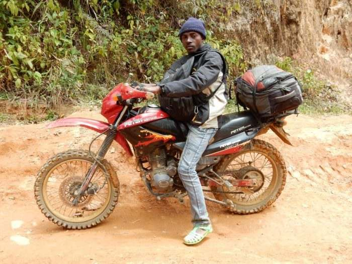
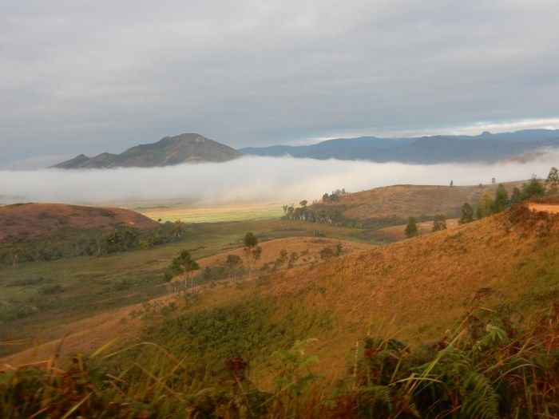
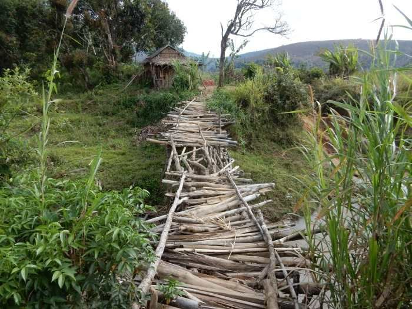
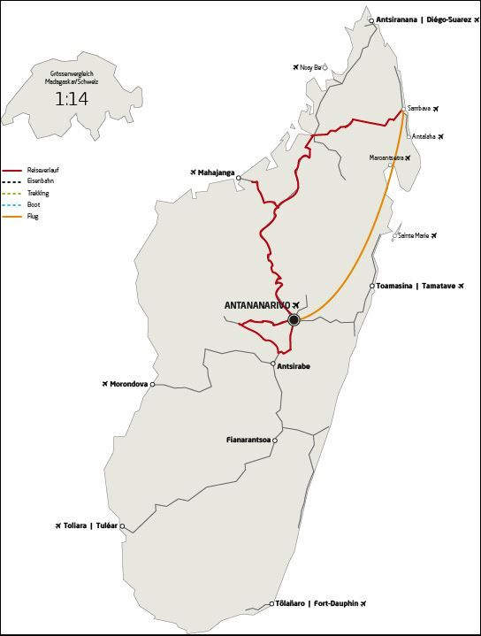

L’aventure en moto, la VRAIE ! – MG127 – CrossMadagascar

Découvrez l’aventure moto à Madagascar avec notre circuit CrossMadagascar : Enfourchez une moto chinoise et traversez Madagascar en off-road avec un guide expérimenté ! Vous n’oublierez JAMAIS notre CrossMadagascar…Un circuit intense, sur des trajets off-road et sans rencontrer un seul touriste européen des jours durant ! Bonne condition physique exigée, le dos et les abdominaux sont mis à rude épreuve !
Jours 1 – 8 : Antananarivo – Ampefy – Sambaina – Antananarivo – Maevatanana – Ankarafantsika – Antsohihy
Nous démarrons dans la capitale Antananarivo, avec des motos neuves. Il s’agit de 150-200cc, et comme elles sont « made in China », nous faisons un premier tour de piste vers l’Ouest. Ensuite nous attaquerons le grand tour à destination du Nord.

Arrêt à Ankarafantsika pour découvrir, en randonnée pédestre, la flore et faune exceptionnelles de cette forêt sèche. Après un détour par la ville cosmopolite et attachante de Mahajanga, nous traversons la savane et les palmeraies autour de Port Bergé.
Nous voici arrivés à Antsohihy. Jusque-là, les 1000 km de route sont acceptables. En majeure partie asphaltés, avec toutefois souvent des nids-de-poule.
Jours 9 – 13 : Antsohihy – Ambatoriha – Ambodiadabo – Ambatolona – Andapa
Depuis Antsohihy, nous nous dirigeons vers l’Est en passant par les collines, les plaines de rizières et de rares villages, pour atteindre Andapa, ville de montagne. Nous traversons des zones où les voitures ne circulent plus ! Tout au plus, rencontrerons-nous un tracteur fort comme un taureau, qui se fraie un chemin dans la boue avec sa remorque à un essieu. Ici, le métier de porteur se pratique encore et presque tout est transporté à dos d’homme : des caisses de bière à la tôle ondulée, des matelas-mousse au ciment… Entre Antsohihy et Andapa, nos logements sont très modestes, voir presque insensés, mais il n’y a pas d’alternative ! Après tout, nous ne sommes pas des touristes, mais des transporteurs : nous apportons les motos à un projet humanitaire à Andapa !

Ce trajet off-road d’environ 400 km à travers le pays comprend des pistes de sable, des pistes de latérite boueuses et glissantes, des franchissements de cours d’eau, la traversée d’un fleuve et bien d’autres surprises.En principe, il ne devrait pas pleuvoir. Les températures diurnes se situent en moyenne entre 25° et 35°.
Jours 14 – 19 : Andapa – Sambava – Antananarivo
Après la remise des motos au projet humanitaire identifié par PRIORI, nous nous remettons de notre périple aventureux à Sambava, au bord de l’Océan Indien. Puis nous rejoignons la capitale en avion.
Informations importantes pour le CrossMadagascar :

- Il ne s’agit pas d’une course. Il n’y a ni classement ni contre-la-montre.
- Nous utilisons des motos tout-terrain légères, car les véhicules lourds ne sont pas adaptés à ce trajet.
- Chaque participant ne peut disposer que de 15 kg de bagages au max. (Casque, vêtements et chaussures non inclus).
- Chaque participant arrive avec son propre équipement (casque, vêtements, chaussures).
- Le nombre de participants est limité à min. 4 et max. 8 personnes. Le groupe doit être constitué dès le départ par les personnes intéressées (groupe d’amis p.ex.)
- Chaque participant conduit sa propre moto et transporte ses propres bagages.
- Les passagers ne sont pas admis.
- L’hébergement, les toilettes et les douches sont très simples durant environ une semaine.
- Durant la même période (env. 1 semaine), la nourriture est modeste et se limite à du riz, de la viande et de la soupe.
- Un guide PRIORI nous accompagne sur sa propre moto pendant toute la durée du circuit.
- Sur les pistes tout-terrain, un motocycliste local nous accompagne, en tant que connaisseur des pistes empruntées.
- L’assurance couvre les éléments habituels à Madagascar. Chaque participant est tenu de souscrire une assurance complémentaire et suffisante.
- Pour les réparations, nous ne pouvons compter que sur nous-mêmes. Si une moto reste irréparable, aucun remplacement ne peut être effectué.
- Il n’y a pas de véhicule d’assistance.
Prestations incluses :
- Vol aller et retour depuis la Suisse, y compris les taxes d’aéroport
- Vol intérieur Sambava – Antanananarivo incluant les taxes d’aéroport
- 18 nuitées en chambre individuelle avec petit déjeuner
- Moto pour l’itinéraire Antananarivo – Ampefy – Antanananarivo – Majunga – Antsohihy – Andapa – Sambava
- Carburant, assurance et kilométrage illimité le long de l’itinéraire prévu
- Visite de la cocoteraie de Soavoanio avec guide local
- Visite et entrée à la pépinière d’Ambohimanitra, avec guide local et déjeuner.
- Tous les transferts mentionnés aéroport – hôtel – aéroport selon l’itinéraire.
- Chambre disponible durant la journée (day-use) avant le vol de retour (départ en soirée)
- Guide PRIORI pendant toute la durée du voyage (y compris ses repas et hébergements)
Non inclus :
- Visa et assurances
- Déjeuners ou pique-nique (sauf à Sambava le 16e jour)
- Dîners pendant tout le voyage
- Toutes les boissons
- Guides locaux (obligatoires) et billets d’entrée pour les visites des parcs nationaux et des réserves
- Les activités privées et dépenses personnelles à Antananarivo et en route
MG127 : CrossMadagascar
L’essentiel :
- L’aventure en moto, la VRAIE, à travers un Madagascar authentique
- Traversée de zones off-road ; pistes de sable et de latérite, franchissement de cours d’eau
- Visite de cocoteraie et de pépinière
- Paysages époustouflants
Durée :
19 jours / 18 nuits.
Période :
Ce circuit est réalisable de juin à octobre.
Itinéraire :
1) Antananarivo – Ampefy – Sambaina – Antananarivo
2) Antananarivo – Ankarafantsika – Antsohihy – Andapa – Sambava – Antananarivo
Caractéristiques du circuit :
Région : Hauts-Plateaux, Ouest, Nord-Est
Contenu : nature, traversées en bac, aventure
Condition physique . très bonne
On vous invite également à regarder cette vidéo de la blogueuse hollandaise Itchyboots parcourant Madagascar en KTM sur YouTube.
Vous pouvez télécharger ici le flyer du CrossMadagscar, et contactez-nous pour une description détaillée de cet itinéraire ou pour un programme complémentaire à ce voyage sur priori-voyages@netplus.ch.